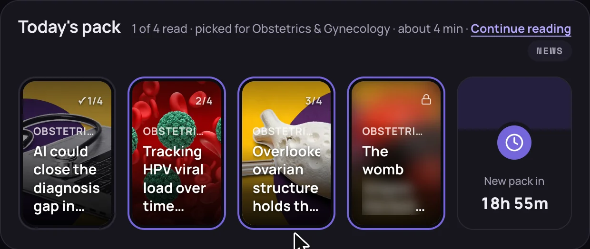
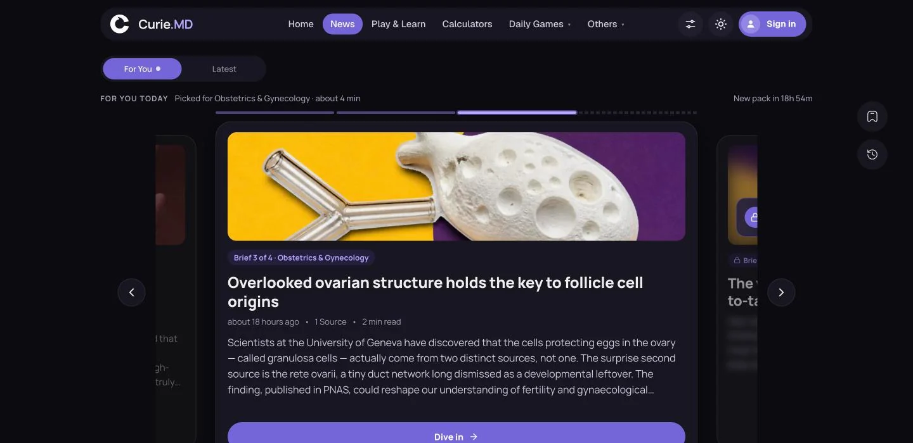
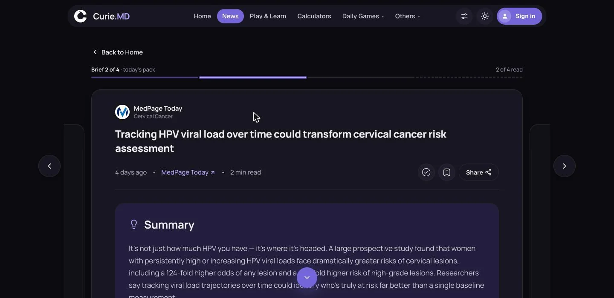
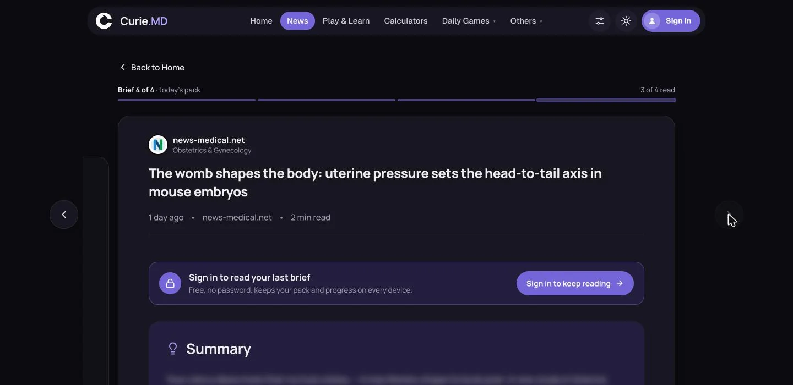

Curie Briefs on curie.md, AI-written clinical news summaries for US physicians
Surface owner and product designer: problem framing, research, UX and UI, launch, measurement
Andrew (Curie PM), Gayathri (engineering), Muskan (email sends)
October 2026 discovery and design, launched 4 November 2026
Readers, but almost no known ones
Curie Briefs had readers but almost no known ones. In the week of 12 October, Briefs logged 1 identified impression: one page view from one signed-in, non-team physician in the US.
- Retention was falling. Physicians who found Briefs rarely came back, and the feed gave them no reason to return on a given day.
- Most readers were anonymous. Curie.md lets anyone read without an account, so traffic didn't turn into physicians we could reach again.
- My hypothesis: the feed asked too much. A long list across every specialty left a busy clinician to do the sorting, with no clear point where they were done.
My target as surface owner was 150 identified impressions a week by 31 December 2026. That feeds a company goal of 690 weekly identified impressions across curie.md, the bar for selling ads on the platform.
Three findings that shaped the design
Three findings from October shaped the design. Each came from data I pulled or tests I ran before writing a spec.
- Our signed-in numbers were mostly us. When I checked a reported “12 signed-in impressions” in Mixpanel by email domain, most were ZoomRx or test accounts. Real external reach was 1 to 3 physicians. I worked with Srivathsan to strip team accounts from reporting, so every later number is honest.
- Specialty relevance had evidence; generic content didn't. In my first oncology email campaign, 6 of the 7 identified readers came from the specialty-targeted send. Specialty was the one lever with proof behind it.
- A short, fixed set beats an open feed. Medscape's “Top 5 For You” builds a daily habit with the same shape every time. Four briefs is enough that one headline lands, and few enough to finish in about four minutes.
In email, a story-pack layout lost to a plain digest: about 14 visitors and 4 identified physicians, against about 4 and 0. I read that as a lesson about the inbox, not the product. On the site, a story format gives a clear start, progress and finish; in an email it is only a picture of buttons.
From a feed to a daily ritual
The For You pack turns Briefs from a feed into a daily ritual: four briefs picked for your specialty, read one after another, with a clear finish line.
On the home screen
Today's pack is the first card. Four story tiles show the specialty, headline and position (1/4 to 4/4), with a tick on read ones. A summary line reads “1 of 4 read · picked for Obstetrics & Gynecology · about 4 min · Continue reading”. A fifth tile counts down to the next pack.

In the Briefs tab
For You is the default view, next to Latest. The pack plays as a carousel with a segmented progress bar, one brief per card and a “Dive in” button to the full summary.

In the reader
The brief opens with “Brief 2 of 4 · today's pack”, the same progress bar and arrows to move through the set.

What I chose, and what it cost
| Decision | Why | Trade-off |
|---|---|---|
| Four briefs a day, not a feed | A finish line is what turns reading into a habit | Fewer briefs seen per visit |
| Picked by specialty | The one lever with evidence from the October campaigns | Thin news days in small specialties |
| Story-style progress (1 of 4, segmented bar) | Shows how close you are to done, so finishing feels worth it | Extra build effort over a plain list |
| Countdown to the next pack | Gives a reason to come back tomorrow | Nothing new to read until then |
| Fourth brief behind a free sign-in | Asks for an account only after three briefs have shown value | Some anonymous readers stop at three |
| Reading stays open, sign-in only unlocks extras | Curie.md has many anonymous readers; a hard wall would lose them | Slower growth in accounts |
The sign-in prompt on the fourth brief says “Sign in to read your last brief. Free, no password. Keeps your pack and progress on every device.” It names what the reader gets, not what we want.

From 1 to 54 identified impressions a week
In its launch week, Briefs hit 54 identified impressions, up from 1 four weeks earlier and 2.6 times the week before. That is 36% of the 150-a-week target.
| Week starting | Identified impressions | Identified physicians |
|---|---|---|
| 2 Nov 2026 (For You launched 4 Nov) | 54 | 18 |
| 26 Oct 2026 | 21 | 11 |
| 19 Oct 2026 | 12 | 6 |
| 12 Oct 2026 | 1 | 1 |
Broader reach grew too. Across the three full weeks after launch, about 900 US visitors a week opened a brief, against about 250 a week in October. Signed-in readers went from under 10 a week to about 70. In the first three weeks, 1,287 US visitors were shown the pack, 983 opened it (76%) and 83 of those were signed in.
The pack didn't do this alone. Specialty email campaigns ran in the same weeks and send readers straight into the pack, so the gain belongs to the two together. The broader reach figures are raw Mixpanel counts and still include some team and scanner traffic.
A front door, not yet a ritual
The pack works as a front door but not yet as a ritual. Most readers open the first story and stop there.
The drop is too steep to be content alone, so I went looking for product causes:
- Bugs I found and logged. From a screen recording, I found the pack reshuffled depending on who opened a link and when, which broke email campaigns that promised specific stories. About 1 in 6 visitors also saw the pack fail to load. I logged both in Planner for Gayathri and Vignesh.
- Physician interviews. I interviewed a cardiologist and a primary care physician on first use of the pack. Their feedback is shaping a rework of the For You page.
- Next experiments. A short questionnaire at the end of the pack to drive sign-ins, a lighter guest login that captures email, and Google Search ads that land on cardiology briefs.
Ship a pack-completion event on day one and lock the baseline before launch. Separating the pack's effect from the email campaigns took more work than it should have.
Sources
- Identified impressions: Curie weekly impressions readouts (Monday Q1 dashboard collector), weeks of 12 Oct to 2 Nov 2026
- Mixpanel, Curie web, US only: pack totals since launch, story viewers by position, weekly readers Oct to Nov 2026
- UI: screenshots of curie.md and curie.md/briefs, taken 27 Nov 2026